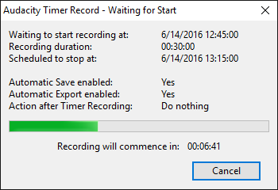
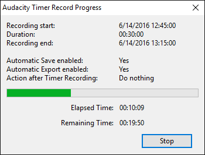
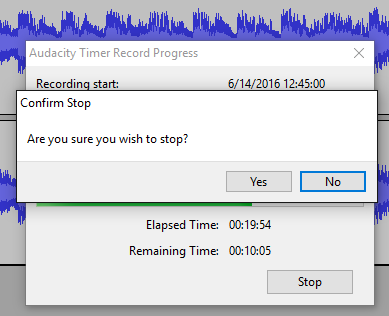
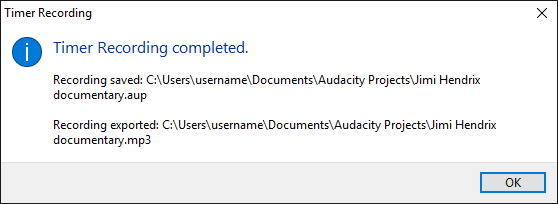
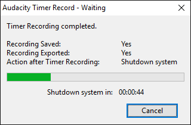
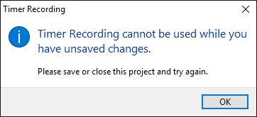
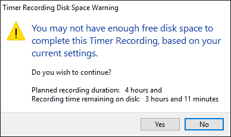

Timer Record
The Timer Record setup dialog enables you to schedule when a recording begins and ends and optionally:
- effect an Automatic Save Project or an automatic Export to any supported audio format,
- specify that Audacity closes or the computer shuts down on completion of the Timer Record.
- Accessed by:

| Before you start a Timer Record session it is very important that you make all necessary settings in Audacity as while a Timer Record session is in progress, including in the period while Audacity is waiting to start the recording, the Audacity controls and menus will be inoperable until the recording finishes, or is Stopped/Cancelled.
In particular you need to pay close attention to setting the input signal level as Audacity's sliders cannot be used during a Timer Record session (you may though have a hardware gain control on your input device which would allow you to adjust the signal level during a Timer record session). Note that you cannot initiate a Timer Record of you have any unsaved data in your project, nor if you have more that one Audacity project open. |
Setting the timer controls
Recording start time
"Start Date and Time" shows the current live time on opening the dialog, meaning that the recording you schedule will start immediately unless you change this control to a time and date in the future.
Recording end time or duration
You can set the end of the scheduled recording either by specifying this at "End Date and Time", or by choosing the length of the recording at "Duration". The digits in the time controls are interlinked, so that typing on a digit or incrementing it forwards or backwards with keyboard up arrow or down arrow updates the preceding digits. The time controls themselves are also interlinked, so that "Start Date and Time" updates the "End Date and Time", and changing the "End Date and Time" modifies the "Duration" (and vice versa).
There is no default "Duration". When you open Timer Record next time, Audacity remembers the duration that was used for the previous scheduled recording.
- If you need to change a date forwards, incrementing either hour digit in the time controls with keyboard up arrow will always increment the date automatically.
- If you want to start an immediate recording, changing only the Duration is often the simplest method because this changes the End Date if necessary as well as the End Time.
Completion actions
There are a number of things you can request Audacity to do on succesful completion of a Timer Recording.
Automatic Save
Checking the checkbox  Enable Automatic Save enables you to then use the button to select a location and file name for an automatic save of the project when the recording finishes.
Enable Automatic Save enables you to then use the button to select a location and file name for an automatic save of the project when the recording finishes.
If you have already Saved the project then that field will be populated with "Current Project".
Automatic Export
Checking the checkbox  Enable Automatic Export enables you to then use the button to select an audio file format for the export and a location and file name for the automatic export of the project when the recording finishes.
Enable Automatic Export enables you to then use the button to select an audio file format for the export and a location and file name for the automatic export of the project when the recording finishes.
| If you have "Use custom mix" set to be "on" in Import/Export preferences, and if you use the automatic export feature of Timer Record you will find that after the recording completes the automatic export will be interrupted with the "Advanced Mixing Options" mapping dialog, requiring manual input from you. |
Options - After recording completes
If you have selected either an Automatic Save or Export the you can choose an action for Audacity to perform once the recording has completed and the automatic save or export has been made. The "Options" dropdown menu will activate and you can choose:
- Do Nothing
- Exit Audacity
- Restart System - only available on Windows
- Shutdown - only available on Windows
The latter three options will give you a one minute period of grace to abort the exit, shutdown or restart if you change your mind later. A dialog will be shown for that minute enabling you to abort the previously selected action by using the button, see below.
Starting the Timer Record
When you have made all your required settings simply press the button to start the Timer Record which will then either wait to start to record later or start immediately depending on your settings in the timer contols, the "Start Date and Time". Alternatively you can abort the Timer Record by pressing the button.
| It is not currently possible to undertake any other activities in Audacity while recordings are running or waiting to start. To work in other applications while Timer Record is running, use the Task Switcher utility on your system, usually Alt + Tab. |
Waiting for Start dialog
If you had set the recording's Start Date and Time in advance of the current time, pressing in the setup dialog will cause the Waiting for Start dialog to appear:
- 
This shows the timing details of your requested Timer Record along with a summary of the requested completion options.
If you want to abort this recording before it starts, press the button. You will then be presented with a confirmation dialog asking you to confirm the cancellation (similar to the Stop cancellation dialog shown below in the progress section).
Timer Record Progress dialog
When the recording starts, the Timer Record Progress dialog appears:
- 
While the recording is in progress you can stop the recording at any time by pressing the button, or (on Windows and Mac) use the Esc key on the keyboard. This stops the recording, leaving the recorded track in place and performs any Automatic Save and/or Export you requested when setting up the Timer Record:. Any other completion actions (such as Exit Audacity, Shutdown system or Restart) will be aborted by using the button.
- 
If you wish to stop the recording without performing any pre-requested Automatic Save and/or Export, then click the window Close button (usually colored red when you hover the cursor over it). This will just stop the recording but leave the recorded track in place
Timer Recording completed dialog
When the recording finishes, any automatic Save or Export actions that you specified are peformed and the Timer Record Completion dialog appears showing what has been done:
- 
Completion Action abort
If you have requested Exit Audacity, Shutdown system or Restart system, then after any Automatic Save and/or Export that you also requested has been effected, the following confirmation dialog will appear. In this example Shutdown system was selected along with both an Automatic Save and an Automatic Export.
- 
This gives you a one minute period of grace to change your mind and abort the pre-selected action by clicking the button.
Timer Record needs a clean project
You are not allowed to start a Timer record if you have any unsaved changes in the project. You must either save or close the project and then try again. The following error message will appear if you try to do so.
- 
This is done to protect against the potential loss of any currently unsaved changes if you select Exit, Shutdown or Restart and have not also selected an Automatic Save.
Insufficient disk space
If you attempt to create a Timer Recording which for which there is insufficient disk space currently available based on your current setings then the following error message will appear:
- 
You may still choose to go ahead by clicking the button, you will either need to free up some disk space before the Timed Recording starts. If you do not Timer Record will proceed with the recording and then stop when your computer is about to run out of disk space, the remainder of the scheduled recording will not be recorded.
Pressing the will abort the Timed Recording setup.